整體流程
建料號 + 規格→開檢驗批→量尺寸→記外觀→判定 / 結批→出報告
左邊選單就是這幾個頁面。料號與規格每個料號只做一次;檢驗批每批做一次。
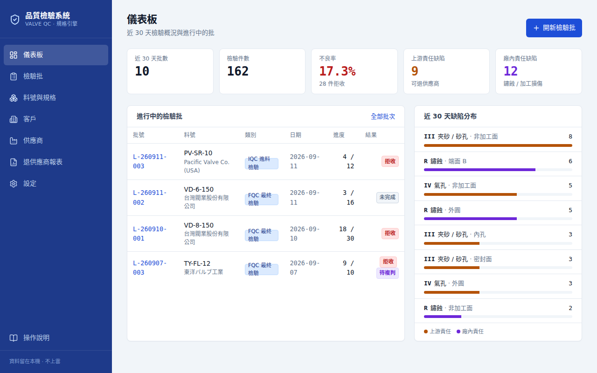
儀表板:近 30 天概況、進行中的批、缺陷分布(橘 = 上游鑄造廠責任、紫 = 廠內責任)。
判定顏色
| 標籤 | 意思 |
|---|---|
| 允收 | 合格 |
| 警戒 | 合格,但已經用掉 80% 公差,要注意(可能是刀具磨耗前兆) |
| 拒收 | 不合格 |
| 待複判 | 系統不確定(規格沒定義這種情況、或 AI 抓到異常),要由人判 |
| 未完成 | 該量的尺寸還沒量完 |
本說明的案例:9/10 早班,台灣閥業 8" 閥板 30 件出貨前全檢
底下每一步都用這一批當例子,畫面截圖就是這批的實際狀態。
| 客戶 / 料號 | 台灣閥業股份有限公司 · VD-8-150 8" 閥板 Class 150 · 圖面 Rev B · 材質 ASTM A216 WCB |
| 鼎新工單 / 採購批 | WO-2609-444 / PO-2608-32 |
| 毛胚 | 大甲鑄造廠 · 爐號 H26103C |
| 數量 / 類別 | 30 件 · FQC 出貨前全檢 |
| 檢驗員 | 林志豪(車床 #3 加工完下線) |
| 批號 | 系統自動編 L-260910-001 |
| 這批發生的事 | 量到第 18 件:「總厚」整欄往上限飄、2 件超差(刀具磨耗);#3 內孔有 0.57mm 氣孔超過 0.5 上限;#17 非加工面夾砂 1.57mm 超過 1.5 上限 → 這兩件退大甲鑄造廠 |
1第一次使用(只做一次)
誰做:品管主管
- 點左邊 設定 → 填公司名稱、地址、電話 → 儲存。這會印在報告抬頭上。
- 點 客戶 → 右邊「新增客戶」:代號
C001、名稱「台灣閥業股份有限公司」→ 新增。備註可以寫這家客戶的脾氣,例如「密封面鑄孔零容忍」。 - 點 供應商 → 新增「大甲鑄造廠」「彰化精密鑄造」等上游鑄造廠(退貨報表會依供應商分)。
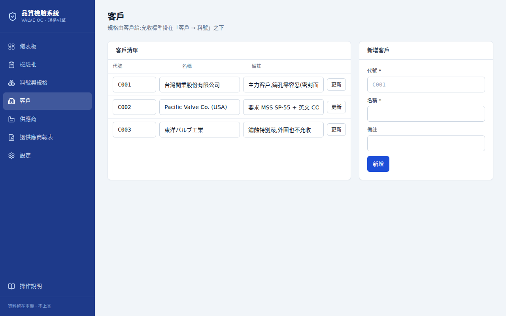
客戶頁:左邊清單可直接改,右邊新增。
2建料號與允收標準(每個料號一次)
誰做:品管主管,拿著客戶圖面 DWG-VD-8-150 Rev B
- 點 料號與規格 → 右上「新增料號」→ 客戶選台灣閥業、料號
VD-8-150、品名「8" 閥板 Class 150」、圖號 / 版次、材質、吋數 8 → 建立。 - 進到料號頁 → 按「建立第一版」。
- 一、尺寸項次:按「新增項次」,照圖面一項一項填。以這個料號為例:
項次 2「總厚」標稱 38.000、下公差 −0.100、上公差 +0.100、量具 分厘卡、頻率 每件、勾關鍵特性;
項次 1「外徑」203.200 ±0.100、量具 三次元、頻率 抽檢;
項次 5「軸孔直徑」32.000、下公差 0、上公差 +0.025(單邊)、量具 塞規 / 環規、每件 → 檢驗畫面會變成「通 / 不通」按鈕(見 4.2)。
頻率怎麼選:分厘卡 / 高度規 / 卡尺量的填「每件」;三次元量的填「抽檢」或「首件」。 - 二、外觀允收矩陣:一開始全部是「拒收」。依台灣閥業的規範放寬:
「外圓 / 端面 / 內孔 × III 夾砂、IV 氣孔」勾允許、≤ 0.5 mm、× 2 個;
「非加工面 × III / IV」允許、≤ 1.5 mm、× 5;
「密封面」整欄留拒收 → 儲存外觀矩陣。 - 右上按「生效此版本」。生效後就鎖住不能改。
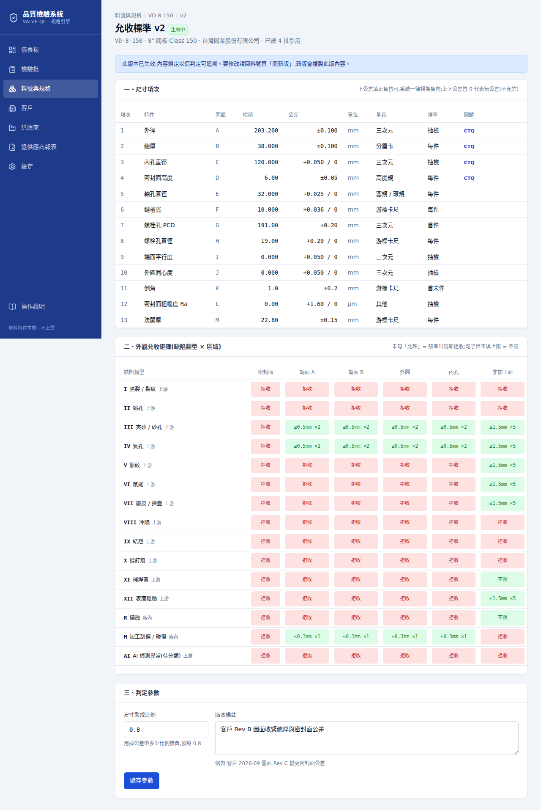
VD-8-150 規格 v2(生效中):上面 13 個尺寸項次,中間外觀矩陣(紅 = 拒收、綠 = 允許及上限)。
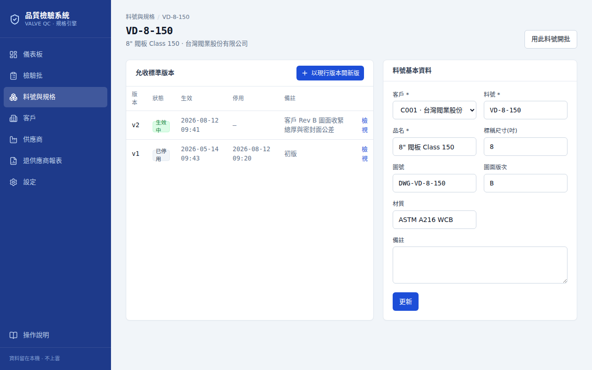
料號頁的版本歷史:v1 已停用、v2 生效中。8 月客戶圖面改 Rev B 收緊總厚公差,就是「開新版 → 改 → 生效」做的。
規格要改怎麼辦? 回料號頁按「以現行版本開新版」→ 系統複製一份新草稿 → 改 → 生效。8 月之前的批仍然用 v1 判定,報告永遠對得上。
提示:外觀矩陣不用一次填完 84 格。先認真定「III 夾砂、IV 氣孔、R 鏽蝕」在各區域的上限,其他留拒收。沒定義到的情況系統會標「待複判」由人判,之後再開新版補進去。
3開檢驗批(每批一次)
誰做:檢驗員林志豪,車床 #3 下線後
- 點 檢驗批 → 右上「開新檢驗批」。
- 料號選
C001 · VD-8-150、類別 FQC 最終檢驗、數量 30。 - 從鼎新工單抄:工單號
WO-2609-444、採購批PO-2608-32;毛胚供應商選大甲鑄造廠、爐號H26103C(看鑄件上的爐號打印或材證);檢驗員填自己。 - 批號留空 → 系統自動編 L-260910-001(L-年月日-流水號)。按「建立批並開始檢驗」。
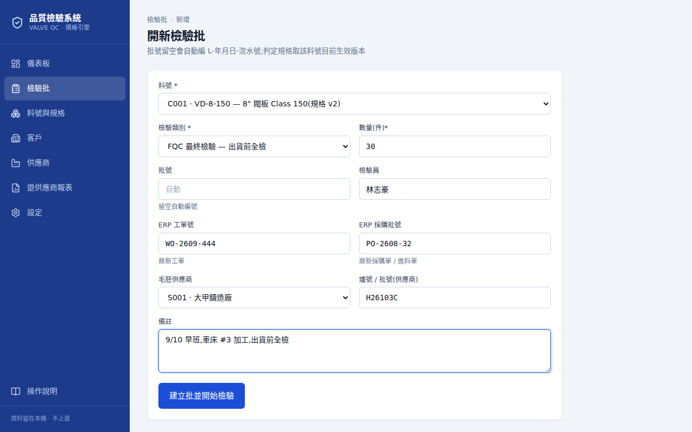
填好的樣子。這些欄位之後會印在報告上、也是退大甲鑄造廠時的證據(採購批 + 爐號)。
擺件:30 件依序排在檢驗台上,#1 ~ #30 對應實體順序,量到一半才不會亂。有刻字的可以在件面板填序號。
4量尺寸
誰做:檢驗員
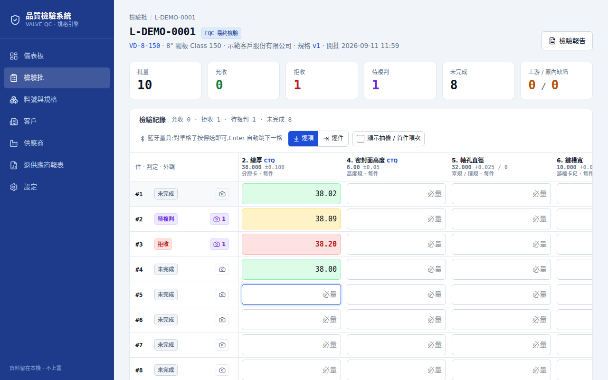
L-260910-001 量到第 18 件的樣子。每一列是一件,每一欄是一個「每件」項次:總厚(分厘卡)、密封面高度(高度規)、軸孔直徑(塞規)、鍵槽寬(卡尺)…。綠 = 合格、黃 = 警戒、紅 = 超差。
- 拿起分厘卡,點「2. 總厚」的第一格(#1)。
- 量 #1 → 藍牙分厘卡按 DATA 鍵(或手打
38.051)→ Enter → 游標自動跳到 #2。 - 一路量到 #30 → 游標自動跳到「4. 密封面高度」的 #1 → 放下分厘卡,換高度規。
- 三次元量的項目(外徑、內孔直徑、PCD…)不在這裡打,用「匯入三次元」讀報告進來(見 4.4);想手填就勾右上「顯示抽檢 / 首件項次」。
林志豪量到 #5 打了 38.107,格子變紅 — 超過上限 38.100。不用停下來,先量完,紅的件系統已經記住是「拒收」。
逐項 vs 逐件(右上切換)
| 逐項(預設) | 同一支量具量完全部件再換下一項。30 件 × 6 個每件項次 = 只換 6 次量具,最快。 |
|---|---|
| 逐件 | 一件量完所有項次再換下一件。14" Disc 這種很重、搬一次很累的用這個。 |
藍牙量具(三豐):接收器 U-WAVE-R 插電腦 USB,用 U-WAVEPAK 設成 Keyboard 模式、資料後加 Enter(設一次)。之後量具按 DATA 鍵 = 自動打字 + Enter,系統不用任何設定。游標在哪格,值就進哪格。
打錯:回到那格改掉再按 Enter 就覆蓋。想清空就刪掉內容按 Enter。↑↓ 可以在同一欄上下移動。
4.2塞規 / 環規:通 / 不通按鈕
誰做:檢驗員
塞規、環規、螺紋規這種量具沒有數值,只有「通端進得去、止端進不去」。所以量具設成「塞規 / 環規」的項次,格子不是數字欄,是兩顆按鈕。
還是 L-260910-001。項次 5「軸孔直徑」32.000 +0.025/0 用塞規:林志豪拿 32.000 通端和 32.025 止端,每件塞一下 — 通端進、止端不進就按「通」;通端進不去或止端也進得去就按「不通」。
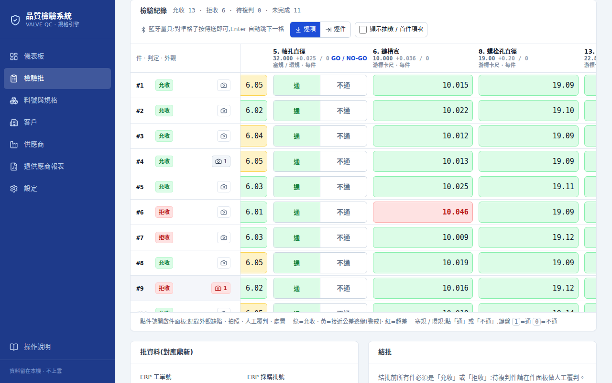
「5. 軸孔直徑」欄:表頭標 GO / NO-GO,每格兩顆按鈕。#6 那件鍵槽寬超差是另一欄的事,塞規欄全通。
操作
- 點該項次第一格的「通」或「不通」→ 格子變綠 / 紅,游標自動跳到下一件(跟數字欄 Enter 一樣)。
- 要用鍵盤:游標在格子上時按 1 或 G = 通、0 或 N = 不通,自動跳下一件。整批 30 件只要按 30 下。
- 按錯了:再點一次同一顆按鈕就清掉,或直接點另一顆。
- 不通的件立刻變「拒收」,不用再做別的。
建規格時怎麼設
| 欄位 | 填法 |
|---|---|
| 量具 | 選「塞規 / 環規(通/不通)」— 選了這個,檢驗畫面就變按鈕 |
| 標稱 / 公差 | 照圖面填(例如 32.000、0、+0.025),報告上要印;判定不看它,只看通 / 不通 |
| 頻率 | 塞規很快,通常「每件」 |
報告上怎麼呈現:尺寸統計那一列不會有 Min / Max / Cpk(沒數值),改印「通 28 / 不通 2」;逐件附錄印「通」「不通」。
什麼時候該用塞規、什麼時候該量數字:只要判合不合格的用塞規(快);想看趨勢、算 Cpk、跟客戶談製程能力的用三次元或分厘卡量數字。同一個尺寸也可以兩個項次都建:每件塞規 + 每 10 件三次元。
4.4匯入三次元報告
誰做:三次元操作員或檢驗員,三次元量完之後
三次元量的項次(外徑、內孔、PCD、平行度…)不用手抄。三次元軟體「匯出 CSV / 文字報告」→ 在批頁按「匯入三次元」→ 三步就進系統,而且**任何品牌的三次元都能用**(PC-DMIS、MCOSMOS、Calypso、Rational…),不用等我們寫專用程式。
L-260910-001 這批,三次元抽 #3、#4 兩件做全尺寸。操作員在 PC-DMIS 按匯出,得到兩個 CSV(檔頭有 SER NUMBER 3、4),直接丟進系統。
第一步:上傳
- 批頁右上「匯入三次元」。
- 點虛線框選檔,可以一次多選(一檔一件)。Excel 檔請先在 Excel「另存新檔 → CSV」。
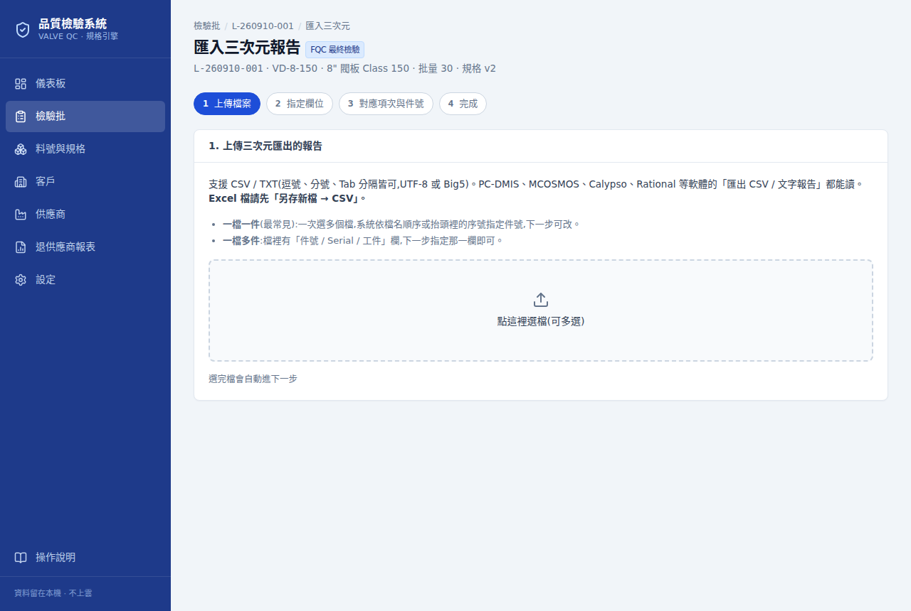
第二步:指定欄位(系統會先猜,通常不用改)
系統自動跳過報告上方的抬頭列(零件名、日期),找到表頭,猜出哪一欄是「特性名稱」、哪一欄是「實測值」。猜錯就用下拉改。
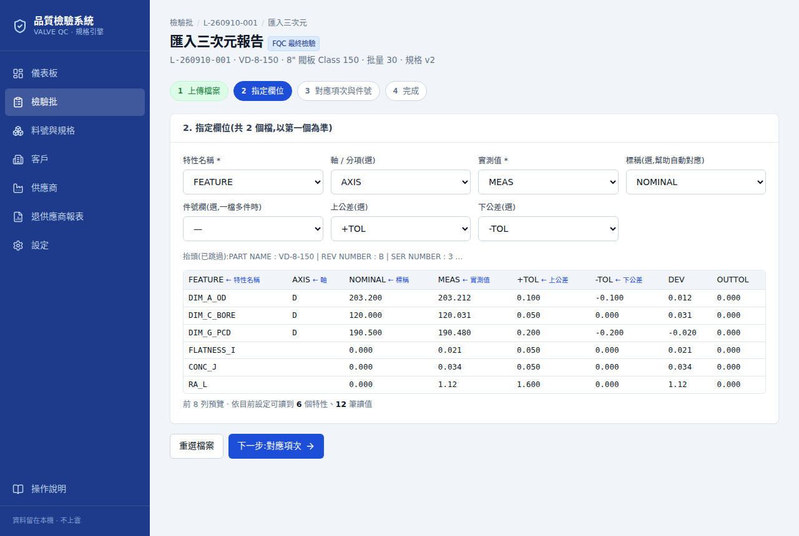
PC-DMIS 的 CSV:FEATURE = 特性、AXIS = 軸、NOMINAL = 標稱、MEAS = 實測,系統全猜對,下面預覽前 8 列讓你核對。
第三步:對應項次與件號
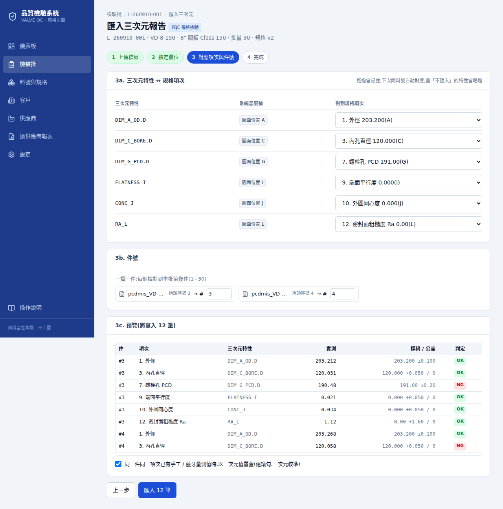
3a:三次元的特性名稱(DIM_A_OD、FLATNESS_I…)對到規格的項次。系統靠名稱、圖面位置代號、標稱值去猜,標籤寫出它為什麼這樣猜;不對就用下拉改。3b:每個檔是第幾件(抬頭有序號就自動帶)。3c:預覽每一筆會進哪一件、哪一項、判定是什麼。
- 3a 對應:檢查每一列。「不匯入」= 這個特性略過(例如三次元多量的參考點)。第一次要人工確認,之後同料號自動套用,不用再對。
- 3b 件號:一檔一件時,每個檔對到第幾件;檔內有「件號 / 工件」欄的(一檔多件),指定那一欄後這裡會列出每個件號值對到第幾件。
- 3c 預覽看一眼判定沒問題 → 按「匯入 N 筆」。
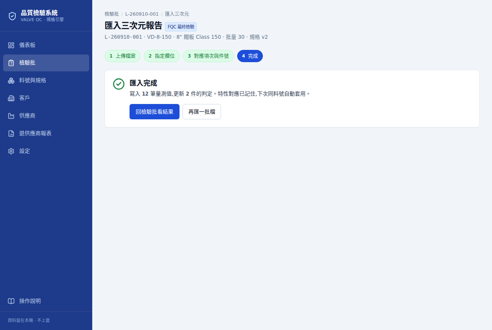
匯入完成:寫入幾筆、更新幾件的判定;略過的會列出原因(件號不在本批、對到塞規項次…)。
之後
| 情況 | 怎麼辦 |
|---|---|
| 同一件同一項次已經手打過 | 預設以三次元值覆蓋(三次元較準);不想覆蓋把勾拿掉 |
| 三次元特性名稱改了 | 下次匯入會多一列「對不到,請選」,選一次就記住 |
| 報告是 Big5 編碼(舊軟體) | 系統自動偵測,中文不會變亂碼 |
| 報告是 PDF | 讀不了。請在三次元軟體改匯出 CSV / TXT;幾乎每套都有 |
| 想少一個動作 | 三次元軟體多半能設「量完自動輸出到某資料夾」,設好後每批只要選檔;之後可再做成自動監看資料夾 |
試試看:系統資料夾
qc-app/samples/cmm/ 有三個範例檔(模擬 PC-DMIS、MCOSMOS、Calypso 三種格式),對應示範料號 VD-8-150,拿去匯入就能看整個流程。4.5看趨勢:刀具磨耗的例子
誰看:檢驗員量的時候就會看到;品管 / 加工主管每天掃一眼
還是這一批。林志豪量完總厚整欄,發現 18 件裡 #2 黃、#5 #7 紅,其他全部落在 38.05~38.09 — 都往上限靠。他把畫面拿給車床 #3 的師傅看:「刀該補了。」
黃色「警戒」的意思是合格,但已經用掉 80% 公差。單一格黃沒關係;整欄變黃、而且數值都往同一邊偏,就是機台在告訴你:刀具磨耗或熱變形,再不處理下一批就會紅。
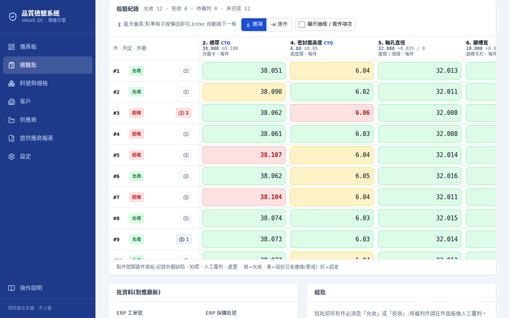
L-260910-001:「總厚」標稱 38.000 ±0.100,整欄都落在 38.05~38.09,往上限靠;#5、#7 已經超差變紅。「密封面高度」同樣一整欄黃。這不是量錯,是車床那把刀磨耗,每件越車越厚。
怎麼讀
| 看到什麼 | 代表 | 做什麼 |
|---|---|---|
| 零星幾格黃,數值有正有負 | 正常散布 | 不用動 |
| 整欄黃,數值都偏同一邊(都偏大或都偏小) | 刀具磨耗 / 刀補跑掉 / 機台熱變形 | 通知加工:量刀、補刀補值。趁還是黃的時候補,別等紅 |
| 前面綠、越後面越黃、最後幾件紅 | 磨耗在這批中間發生 | 紅的件重工或報廢;回頭確認黃的那幾件要不要一起重工 |
| 只有關鍵特性(CTQ)黃,其他正常 | 那一道製程 / 那把刀的問題 | 看是哪支刀車那個尺寸 |
報告上的 Cpk
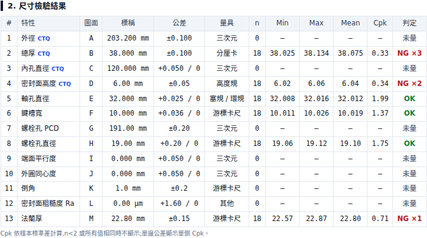
同一批的檢驗報告「尺寸檢驗結果」:Mean 偏離標稱、Cpk 掉到 1 以下,就是量化的證據。
Cpk 怎麼看:≥ 1.33 穩;1.00~1.33 勉強;< 1.00 這批一定會有超差。Cpk 低但 Cp 高 = 散布小但中心偏了,補刀補值就能救;Cp 也低 = 散布大,是機台或量具的問題。
警戒比例可以調:規格頁「判定參數」的警戒比例預設 0.8。公差很緊的料號可以設 0.7 提早報;公差很鬆的設 0.9 免得整天黃。
5記外觀(有缺陷才記)
誰做:檢驗員,目視 / 放大鏡看六個區域
#3 翻過來看內孔,放大鏡下有一個小氣孔。拿針規比對約 0.57mm。
- 點件號 #3 → 右邊滑出「件面板」。
- 點區域 內孔。
- 點缺陷類型 IV 氣孔。
- 尺寸填
0.57、數量 1、時鐘方位 8(從標記點順時針看大約 8 點鐘位置)。責任預設「上游」不用改。 - 按「拍照」用平板相機拍下來(之後退大甲鑄造廠要用)。
- 看「引擎預判」:拒收 — 內孔氣孔上限 0.5mm,0.57 超過 → 按「加入發現」。件 #3 立刻變拒收。
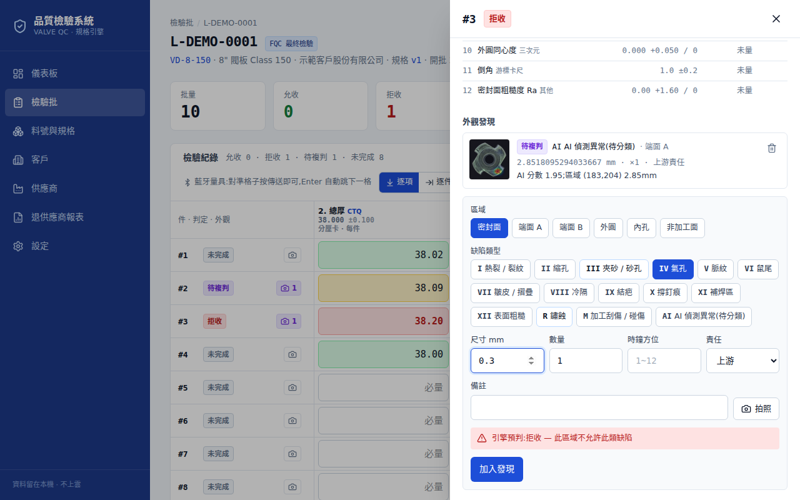
#3 的件面板:上半是這件 13 個尺寸的量測狀況,下半「外觀發現」已有那筆 0.57mm 氣孔,判拒收、責任上游。
#17 非加工面有一塊夾砂,量起來 1.57mm。規格非加工面上限 1.5 → 也是拒收。#11 外圓有一小片鏽,量測前先看的沒發現,應該是加工後停放幾天長的 → 缺陷選 R 鏽蝕、責任改「廠內」、備註「加工後停放 6 天」。
沒有缺陷的件不用做任何事,尺寸量完就自動判允收。責任歸屬預設:鑄造缺陷(I~XII)= 上游,鏽蝕 / 加工損傷 = 廠內,可以改。鏽蝕的備註很重要 — 累積幾個月就知道鏽是哪個站、哪個季節長出來的。
6判定與結批
誰做:檢驗員 → 品管主管
待複判的件
另一批 12" 法蘭(L-260907-003)的 #4 內孔有一道皺皮(VII),規格矩陣沒定義「內孔 × VII」→ 系統標待複判。品管主管對照 SP-55 比對板後判允收,理由寫「對照比對板 Level 2,可接受」。
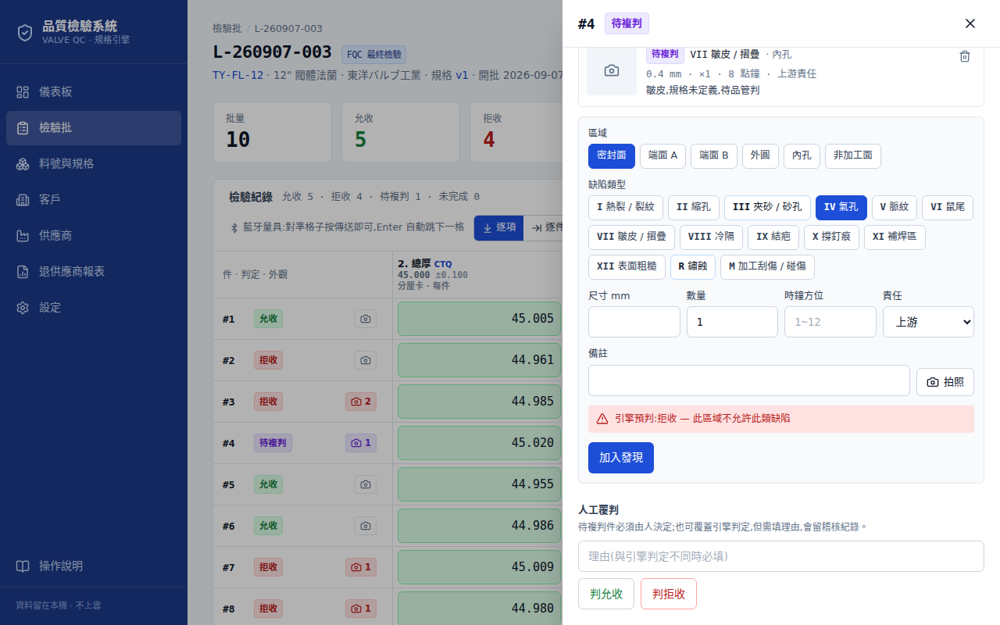
件面板最下面「人工覆判」:填理由 → 判允收 / 判拒收。與引擎不同時一定要填理由,會留稽核紀錄。
- 待複判的件一定要由人判:開件面板 → 最下面「人工覆判」→ 填理由 → 判允收或判拒收。
- 拒收的件選處置(件面板右上):#3、#17 鑄造缺陷 → 退回供應商;#5、#7 總厚超差 → 重工(車薄一點還救得回來)。
- 30 件都是允收或拒收後 → 批頁最下面「結批」→ 批結論選 允收(26 件出貨,4 件另處理)→ 結批並鎖定。
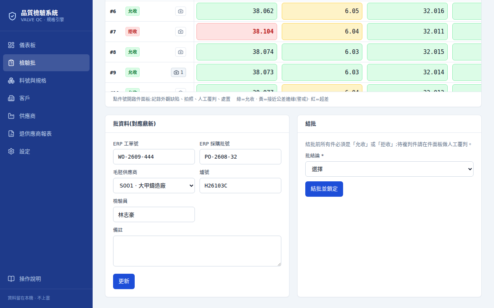
批頁下方:左邊批資料(鼎新工單、供應商、爐號可補改)、右邊結批。
結批後欄位灰掉不能改? 這是正常的(鎖定)。要補資料按「重開此批」。
7出報告
誰做:檢驗員結批後,或業務出貨前
- 批頁右上「檢驗報告」。
- 右上「列印 / 存 PDF」→ 印表機選「另存為 PDF」→ 檔案就是給台灣閥業的出貨檢驗報告,隨貨附上。
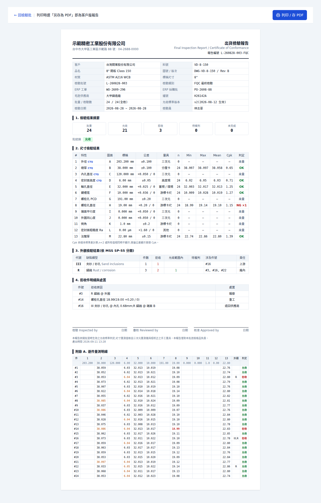
同料號 8/28 已結批的報告(L-260828-003,24 件允收):抬頭、基本資料(含鼎新工單、爐號、規格版本)、結果摘要、13 項尺寸統計含 Cpk、外觀分類(MSS SP-55)、拒收件明細與處置、三欄簽核、逐件附錄。
8退供應商報表(每月)
誰做:品管主管,月初
9 月要跟大甲鑄造廠對帳。點退供應商報表 → 選 2026-09 → 這個月判拒收、責任在上游的全部列出來:哪一批、哪個採購批、哪個爐號、第幾件、什麼缺陷、多大、照片。
- 點 退供應商報表 → 用 ‹ › 選月份。
- 系統依供應商分好,附照片、採購批、爐號。
- 列印 → 跟上游談退貨 / 扣款的證據。
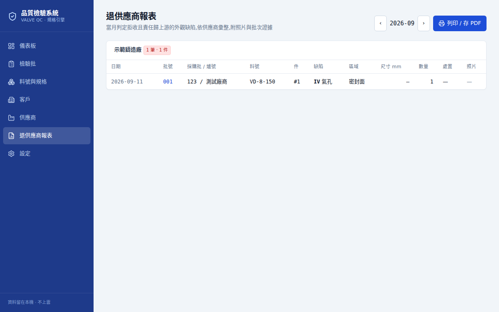
2026-09:大甲鑄造廠 3 筆(含 L-260910-001 的 #3 內孔氣孔 0.57mm、#17 夾砂 1.57mm)、越南 Thanh Long 1 筆。
AI 外觀檢測(第 1 期,選用)
AI 負責「看」,規則負責「判」,人負責「確認例外」。AI 抓到異常的件會自動變成「待複判」,附熱圖,人點開確認。
12" 法蘭那批(L-260907-003)拍照後跑 AI,#7 端面 A 被標出一塊 1.2mm 的異常。檢驗員點開熱圖一看,是一個氣孔 → 把類型從「AI 偵測異常」改成 IV 氣孔,系統依規格判拒收。
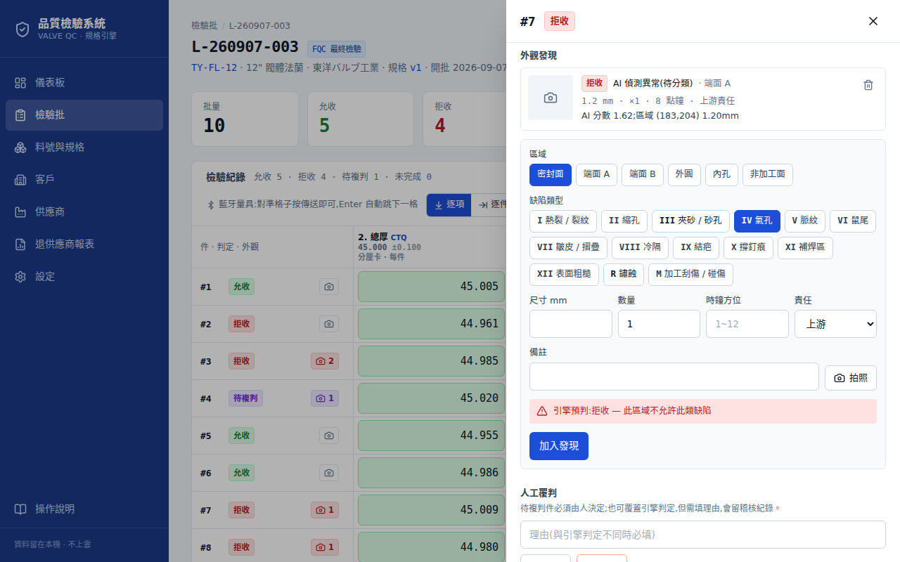
AI 帶進來的發現:縮圖是熱圖(紅色 = 不像正常的地方),類型先標「AI 偵測異常(待分類)」,由人改成真正的缺陷類型。(示範資料用的是公開資料集的金屬件圖,換成你們零件的照片後就是閥板。)
- 開批後,零件放治具,用固定位置的手機 / 相機拍每一件,檔名
01.jpg、02.jpg… = 件號。 - 在電腦跑
infer.py(資料夾)→push_to_qc.py(送進該批)。詳細在aoi/README.md。 - 回到批頁,AI 判 NG 的件已標「待複判」→ 點開看熱圖 → 選真正的缺陷類型 → 判定。
AI 只用「OK 件」照片訓練,每個料號每一面各一個模型。要先照
aoi/README.md 的拍照規範拍 100~200 張 OK 件。常見問題
| 狀況 | 怎麼辦 |
|---|---|
| 開批時說「尚無生效的允收標準」 | 料號的規格還是草稿,回料號頁按「生效此版本」 |
| 料號下拉是空的 | 同上,或還沒建料號 |
| 量測格灰掉打不進去 | 批已結批,按「重開此批」 |
| 結批按了沒反應,說還有幾件未完成 | 有件的「每件」尺寸沒量完,或有待複判件沒人判。看件號旁的標籤 |
| 整欄黃色 | 不是量錯,是刀具磨耗 / 熱變形,見 4.5 |
| 待複判太多 | 外觀矩陣很多組合沒定義。開新版規格把常見組合定清楚 |
| 報告抬頭是「請至設定填入公司名稱」 | 設定頁填公司名稱 |
| 怎麼備份 | 複製整個 qc-app/data/ 資料夾(裡面是資料庫 + 照片) |
| 平板也能用嗎 | 可以,同一個 Wi-Fi,瀏覽器開 http://電腦IP:3000;拍照按鈕會直接開相機 |
| 要重新啟動系統 | 在 qc-app 資料夾執行 pnpm start |
| 示範資料要清掉 | 在 qc-app 資料夾執行 pnpm db:seed(會清空,只留一個空的示範料號) |